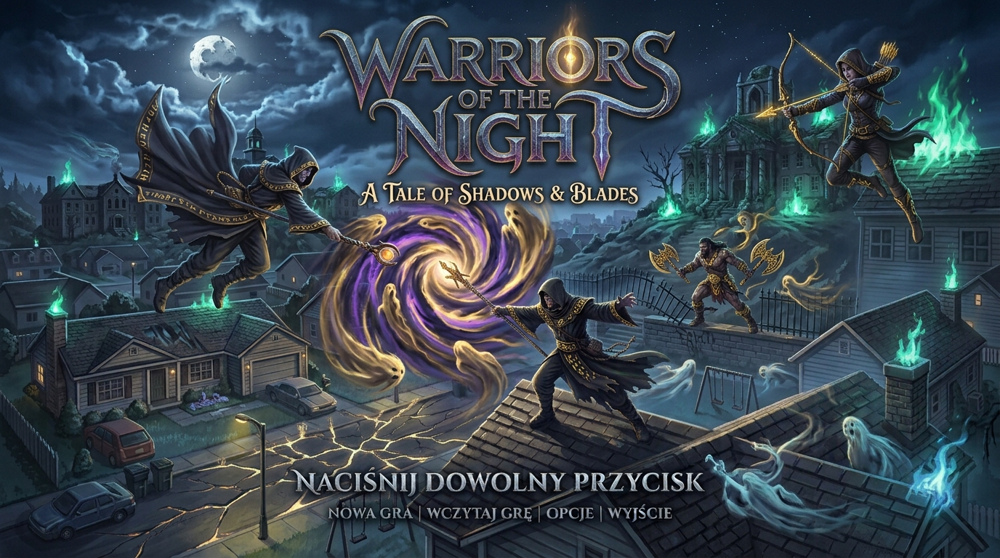

Tryb testowy
Szybkie zestawy
Plansza
Rodzaj misji
Pora dnia / roku
Oddział
Narzędzia w trakcie walki
Grzech
Rozjaśnij wszystkie runy. Dotknięcie runy odwraca ją razem z sąsiadami.
Umiejętności duchowe
Instrukcja
Misja we śnie
Warriors of the Night
Wojownicy Nocy

Nowa gra
Wczytaj grę
Opcje
Wyjście
Statystyki postaci
Zręczność: 0
Witalność: 0
Mądrość: 0
Siła psychiczna: 0
Charyzma: 0
Kronika Wojownika
Wiedza spisana po spotkaniach w snach. Nowe karty odsłaniają się po powrocie z misji.
Wojownik (Gracz)
Życie (HP): 10 / 10
Punkty Akcji: 10 / 10
Bonus celności: +0%
Wrogowie
Pozostali przy życiu: 5
TURA GRACZA
Poziom: parter
Zarządzaj całym oddziałem!
Klawisz Tab przełącza wojaków.
Uważaj na zwiadowców!
GRACE: 0
Level: 1
Misja: 0
GOOD DEEDS: 0
KONIEC GRY